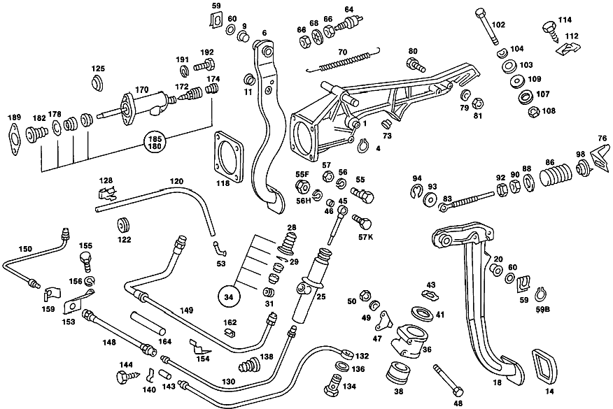

| № | Артикул | Название | Кол. | Примечание | Ограничение |
|---|---|---|---|---|---|
| 1 | A 107 290 16 31 | ПОДШИПНИК | - | Рулевое управление: Влево | |
| 1 | A 107 290 01 19 | ОПОРА ПОДШИПНИКА | 1 | Рулевое управление: Влево [037] FROM CHASSIS: 020 114552 024,025 136352 028,029 051401 032,033 090506 036 005863 | |
| 4 | N 000471 016001 | Стопорное кольцо | - | Автоматическая коробка переключения передач | |
| 4 | A 094 994 24 00 | Стопорное кольцо | 1 | Автоматическая коробка переключения передач | |
| 6 | A 107 290 02 18 | ПЕДАЛЬ | - | Рулевое управление: ВлевоКоробка передач [041] UP TO CHASSIS: 020 10/50,12/52 120334 020 20/60,22/62 120383 024,025 10/50,12/52 150722 024,025 20/60,22/62 150856 028,029 10/50,12/52 054425 028,029 20/60,22/62 054430 032,033 10/50,12/52 096455 032,033 20/60,22/62 096481 036 006884 | |
| 6 | A 107 290 20 18 | ПЕДАЛЬ | 1 | Рулевое управление: ВлевоКоробка передач [043] FROM CHASSIS: 020 10/50,12/52 120335 020 20/60,22/62 120384 024,025 10/50,12/52 150723 024,025 20/60,22/62 150857 028,029 10/50,12/52 054426 028,029 20/60,22/62 054431 032,033 10/50,12/52 096456 032,033 20/60,22/62 096482 036 006885 | |
| 6 | A 107 290 22 18 | Педаль | 1 | Рулевое управление: ВлевоАвтоматическая коробка переключения передач [043] FROM CHASSIS: 020 10/50,12/52 120335 020 20/60,22/62 120384 024,025 10/50,12/52 150723 024,025 20/60,22/62 150857 028,029 10/50,12/52 054426 028,029 20/60,22/62 054431 032,033 10/50,12/52 096456 032,033 20/60,22/62 096482 036 006885 | |
| 6 | A 116 290 04 18 | ПЕДАЛЬ | 1 | Рулевое управление: ВправоКоробка передач [043] FROM CHASSIS: 020 10/50,12/52 120335 020 20/60,22/62 120384 024,025 10/50,12/52 150723 024,025 20/60,22/62 150857 028,029 10/50,12/52 054426 028,029 20/60,22/62 054431 032,033 10/50,12/52 096456 032,033 20/60,22/62 096482 036 006885 | |
| 6 | A 116 290 06 18 | ПЕДАЛЬ | 1 | Рулевое управление: ВправоАвтоматическая коробка переключения передач [043] FROM CHASSIS: 020 10/50,12/52 120335 020 20/60,22/62 120384 024,025 10/50,12/52 150723 024,025 20/60,22/62 150857 028,029 10/50,12/52 054426 028,029 20/60,22/62 054431 032,033 10/50,12/52 096456 032,033 20/60,22/62 096482 036 006885 [402] БОЛЬШЕ НЕ ПОСТАВЛЯЕТСЯ | |
| 9 | A 110 291 05 50 | - Втулка подшипника | - | ||
| 9 | A 124 292 00 50 | - Втулка подшипника | 2 | ||
| 11 | A 110 292 01 50 | - втулка | 2 | [041] UP TO CHASSIS: 020 10/50,12/52 120334 020 20/60,22/62 120383 024,025 10/50,12/52 150722 024,025 20/60,22/62 150856 028,029 10/50,12/52 054425 028,029 20/60,22/62 054430 032,033 10/50,12/52 096455 032,033 20/60,22/62 096481 036 006884 | |
| 11 | A 126 292 00 50 | - Втулка подшипника | 2 | [043] FROM CHASSIS: 020 10/50,12/52 120335 020 20/60,22/62 120384 024,025 10/50,12/52 150723 024,025 20/60,22/62 150857 028,029 10/50,12/52 054426 028,029 20/60,22/62 054431 032,033 10/50,12/52 096456 032,033 20/60,22/62 096482 036 006885 | |
| 14 | A 107 291 01 82 | Чехол | 2 | ПЕДАЛЬ ТОРМ. И СЦЕПЛ. Коробка передач | |
| 14 | A 123 291 00 82 | Накладка педали | 1 | Автоматическая коробка переключения передач | |
| 18 | A 107 290 08 16 | ПЕДАЛЬ | - | Рулевое управление: ВлевоКоробка передач [047] UP TO CHASSIS: 020 110199 024,025 127506 028,029 049404 | |
| 18 | A 107 290 22 16 | Педаль | 1 | Рулевое управление: ВлевоКоробка передач [048] FROM CHASSIS: 020 110200 024,025 127507 028,029 049405 | |
| 18 | A 116 290 02 16 | ПЕДАЛЬ | 1 | Рулевое управление: ВправоКоробка передач [048] FROM CHASSIS: 020 110200 024,025 127507 028,029 049405 | |
| 20 | A 110 291 05 50 | - Втулка подшипника | - | Коробка передач | |
| 20 | A 124 292 00 50 | - Втулка подшипника | 2 | Коробка передач | |
| 25 | A 000 295 78 06 | Главный цилиндр | 1 | Рулевое управление: ВлевоКоробка передач [014] UP TO CHASSIS: 020 067111 024,025 064255 028,029 034010 | |
| 25 | A 000 295 77 06 | ГЛАВНЫЙ ЦИЛИНДР | - | Рулевое управление: ВлевоКоробка передач | |
| 25 | A 001 295 87 06 | Главный цилиндр | 1 | Рулевое управление: ВлевоКоробка передач [015] FROM CHASSIS: 020 067112 024,025 064256 028,029 034011 | |
| 25 | A 000 295 66 06 | ГЛАВНЫЙ ЦИЛИНДР | - | Рулевое управление: ВлевоКоробка передач | |
| 25 | A 000 295 77 06 | ГЛАВНЫЙ ЦИЛИНДР | - | Рулевое управление: ВлевоКоробка передач | |
| 25 | A 001 295 87 06 | Главный цилиндр | 1 | Рулевое управление: ВлевоКоробка передач [015] FROM CHASSIS: 020 067112 024,025 064256 028,029 034011 | |
| 25 | A 000 295 98 06 | ГЛАВНЫЙ ЦИЛИНДР | 1 | Рулевое управление: ВправоКоробка передач [015] FROM CHASSIS: 020 067112 024,025 064256 028,029 034011 | |
| 28 | A 000 295 15 83 | - Защитный колпачок | 1 | Коробка передач | |
| 29 | N 000472 019000 | - Стопорное кольцо | 1 | Коробка передач | |
| 31 | A 000 997 11 86 | - Пробка | 1 | Коробка передач | |
| 34 | A 000 586 29 29 | ремкомплект | 1 | Коробка передач | |
| 36 | A 115 295 03 40 | Держатель | 1 | Коробка передач [014] UP TO CHASSIS: 020 067111 024,025 064255 028,029 034010 | |
| 38 | A 108 295 00 50 | Упорное кольцо | 2 | Коробка передач [014] UP TO CHASSIS: 020 067111 024,025 064255 028,029 034010 | |
| 41 | A 108 295 00 76 | Диск | 1 | Коробка передач [014] UP TO CHASSIS: 020 067111 024,025 064255 028,029 034010 | |
| 43 | A 001 994 32 41 | ПРЕДОХРАНИТЕЛЬ | 1 | Коробка передач [014] UP TO CHASSIS: 020 067111 024,025 064255 028,029 034010 | |
| 45 | A 115 290 06 39 | Тяга привода | 1 | Коробка передач | |
| 46 | A 110 295 02 50 | - Втулка подшипника | 1 | Коробка передач | |
| 47 | A 107 291 00 41 | УПОР | 1 | Коробка передач [015] FROM CHASSIS: 020 067112 024,025 064256 028,029 034011 | |
| 48 | N 000931 006087 | Винт | - | Коробка передач | |
| 48 | N 304014 006004 | Винт с 6-гранной головкой | 2 | Коробка передач | |
| 49 | N 000137 006204 | Пружинная шайба | 2 | Коробка передач | |
| 50 | N 000934 006013 | Гайка | - | Коробка передач | |
| 50 | N 304032 006008 | Шестигранная гайка | 2 | Коробка передач | |
| 53 | A 000 295 00 36 | промежуточный элемент | 1 | Коробка передач | |
| 55 | A 094 295 01 00 | болт | - | Коробка передач [012] UP TO CHASSIS: 020 057835 024,025 056197 028,029 031622 | |
| 55F | A 115 295 01 72 | Эксцентриковая гайка | 1 | Коробка передач [013] FROM CHASSIS: 020 057836 024,025 056198 028,029 031623 | |
| 56 | N 912004 008102 | Пружинное кольцо | 1 | Коробка передач [012] UP TO CHASSIS: 020 057835 024,025 056197 028,029 031622 | |
| 56H | N 000137 008204 | Пружинная шайба | - | Коробка передач | |
| 56H | N 000137 008212 | Пружинная шайба | 1 | Коробка передач [013] FROM CHASSIS: 020 057836 024,025 056198 028,029 031623 | |
| 57 | N 000936 008012 | Гайка | 1 | Коробка передач [012] UP TO CHASSIS: 020 057835 024,025 056197 028,029 031622 | |
| 57K | N 000933 008131 | Винт | - | Коробка передач | |
| 57K | N 304017 008016 | Винт с 6-гранной головкой | 1 | M8X16 Коробка передач [013] FROM CHASSIS: 020 057836 024,025 056198 028,029 031623 | |
| 59 | A 000 994 11 51 | предохранитель | 2 | Коробка передач [036] UP TO CHASSIS: 020 114551 024,025 136351 028,029 051400 032,033 090505 036 005862 | |
| 59 | A 000 994 11 51 | предохранитель | 1 | Автоматическая коробка переключения передач [036] UP TO CHASSIS: 020 114551 024,025 136351 028,029 051400 032,033 090505 036 005862 | |
| 59B | N 000471 016001 | Стопорное кольцо | - | Коробка передач | |
| 59B | A 094 994 24 00 | Стопорное кольцо | 2 | Коробка передач [037] FROM CHASSIS: 020 114552 024,025 136352 028,029 051401 032,033 090506 036 005863 | |
| 59B | A 094 994 24 00 | Стопорное кольцо | 1 | Автоматическая коробка переключения передач [037] FROM CHASSIS: 020 114552 024,025 136352 028,029 051401 032,033 090506 036 005863 | |
| 60 | A 115 291 00 76 | Диск | 4 | Коробка передач | |
| 60 | A 115 291 00 76 | Диск | 2 | Автоматическая коробка переключения передач | |
| 64 | A 000 545 35 09 | Переключатель | 1 | ВЫКЛЮЧАТЕЛЬ СИГНАЛА ТОРМОЖЕНИЯ | |
| 66 | A 000 990 92 51 | гайка | 2 | ||
| 68 | N 006797 012250 | Зубчатая шайба | 1 | ||
| 70 | A 107 993 04 10 | пружина | 1 | ||
| 73 | A 107 291 00 86 | Упорный буфер | 2 | Коробка передач | |
| 76 | A 115 291 05 40 | ДЕРЖАТЕЛЬ | 1 | Коробка передач [402] БОЛЬШЕ НЕ ПОСТАВЛЯЕТСЯ | |
| 79 | N 000137 006204 | Пружинная шайба | 1 | Коробка передач | |
| 80 | N 000931 006115 | Винт | - | Коробка передач | |
| 80 | N 000933 006151 | Винт | 1 | Коробка передач | |
| 81 | N 000934 006013 | Гайка | - | Коробка передач | |
| 81 | N 304032 006008 | Шестигранная гайка | 1 | Коробка передач | |
| 83 | A 115 290 13 39 | ТЯГА | 1 | Коробка передач [047] UP TO CHASSIS: 020 110199 024,025 127506 028,029 049404 | |
| 83 | A 107 290 01 39 | Тяга привода | 1 | Коробка передач [048] FROM CHASSIS: 020 110200 024,025 127507 028,029 049405 | |
| 86 | A 107 993 05 01 | ПРУЖИНА | 1 | Коробка передач | |
| 88 | A 111 291 04 91 | Тарелка пружины | 1 | Коробка передач | |
| 90 | N 070615 010004 | Гайка | 1 | Коробка передач [402] БОЛЬШЕ НЕ ПОСТАВЛЯЕТСЯ | |
| 92 | N 007967 010001 | Гайка | 1 | Коробка передач [402] БОЛЬШЕ НЕ ПОСТАВЛЯЕТСЯ | |
| 93 | N 000125 008418 | Шайба | - | Коробка передач | |
| 93 | N 000125 008443 | Шайба | 1 | 8 MM Коробка передач [047] UP TO CHASSIS: 020 110199 024,025 127506 028,029 049404 | |
| 94 | N 006799 006003 | Стопорная шайба | 1 | 6MM Коробка передач | |
| 98 | A 107 291 00 91 | Тарелка пружины | 1 | Коробка передач | |
| 112 | A 116 291 00 40 | ДЕРЖАТЕЛЬ | 1 | ||
| 114 | N 007976 004205 | Шуруп | 2 | ||
| 120 | A 009 997 38 82 | Шланг | 1 | 7X3,5MM Коробка передач [404] ЗАКАЗЫВАТЬ ПОГОННЫМИ МЕТРАМИ | |
| 122 | A 007 997 58 81 | втулка | 1 | Коробка передач | |
| 125 | A 110 987 00 44 | ДИСК | - | Автоматическая коробка переключения передач | |
| 125 | A 113 987 00 44 | Диск | 1 | 20.5 MM Автоматическая коробка переключения передач | |
| 128 | A 003 988 03 78 | Скоба | 1 | Коробка передач | |
| 130 | A 116 290 00 13 | ПРОВОД | 1 | Рулевое управление: ВлевоКоробка передач | |
| 132 | A 116 290 02 13 | ПРОВОД | 1 | Рулевое управление: ВправоКоробка передач | |
| 132 | A 116 290 03 13 | ПРОВОД | 1 | Рулевое управление: ВправоКоробка передач | |
| 134 | N 915036 006101 | Полый болт | 1 | Рулевое управление: ВправоКоробка передач | |
| 136 | N 007603 010404 | Уплотнительное кольцо | 2 | Рулевое управление: ВправоКоробка передач | |
| 138 | A 123 295 01 83 | Защитный колпачок | 1 | Коробка передач | |
| 140 | N 072571 001025 | Хомут | 1 | Рулевое управление: ВлевоКоробка передач | |
| 140 | N 072571 001025 | Хомут | 1 | Рулевое управление: ВправоКоробка передач | |
| 140 | N 072571 001025 | Хомут | 2 | Рулевое управление: ВправоКоробка передач | |
| 143 | N 073379 006101 | Шланг | 1 | Рулевое управление: ВлевоКоробка передач [404] ЗАКАЗЫВАТЬ ПОГОННЫМИ МЕТРАМИ | |
| 143 | N 073379 006101 | Шланг | 1 | Рулевое управление: ВправоКоробка передач | |
| 143 | N 073379 006101 | Шланг | 2 | Рулевое управление: ВправоКоробка передач | |
| 144 | A 000 990 75 36 | БОЛТ | 1 | Рулевое управление: ВлевоКоробка передач | |
| 144 | A 000 990 75 36 | БОЛТ | 1 | Рулевое управление: ВправоКоробка передач | |
| 144 | A 000 990 75 36 | БОЛТ | 2 | Рулевое управление: ВправоКоробка передач | |
| 148 | A 000 295 21 35 | Шланг сцепления | 1 | Рулевое управление: ВправоКоробка передач | |
| 148 | A 000 295 23 35 | Шланг сцепления | 1 | Рулевое управление: ВправоКоробка передач | |
| 149 | A 123 295 07 13 | ТРУБКА | - | Рулевое управление: ВлевоКоробка передач | |
| 149 | A 460 295 01 13 | Трубопровод | 1 | Рулевое управление: ВлевоКоробка передач [033] FROM CHASSIS: 020 107302 024,025 122717 | |
| 150 | A 107 290 00 13 | ПРОВОД | 1 | Рулевое управление: ВлевоКоробка передач [017] UP TO CHASSIS: 020 073788 024,025,068106 | |
| 150 | A 107 290 03 13 | ПРОВОД | - | Рулевое управление: ВправоКоробка передач | |
| 150 | A 112 320 55 53 | ПРОВОД | 1 | Рулевое управление: ВправоКоробка передач [409] ПРИ МОНТАЖЕ ПОДОГНАТЬ ПО МЕСТУ | |
| 153 | A 107 295 03 40 | Держатель | 1 | Рулевое управление: ВлевоКоробка передач [017] UP TO CHASSIS: 020 073788 024,025,068106 | |
| 153 | A 107 295 03 40 | Держатель | 1 | Рулевое управление: ВправоКоробка передач | |
| 154 | A 123 295 00 40 | Держатель | 1 | Рулевое управление: ВлевоКоробка передач [032] UP TO CHASSIS: 020 107301 024,025 122716 [018] FROM CHASSIS: 020 073789 024,025 068107 | |
| 154 | A 123 295 03 40 | Держатель | 1 | Рулевое управление: ВлевоКоробка передач [033] FROM CHASSIS: 020 107302 024,025 122717 | |
| 155 | N 000933 008131 | Винт | - | Рулевое управление: ВлевоКоробка передач | |
| 155 | N 304017 008016 | Винт с 6-гранной головкой | 1 | M8X16 Рулевое управление: ВлевоКоробка передач | |
| 156 | N 912004 008102 | Пружинное кольцо | 1 | Рулевое управление: ВлевоКоробка передач | |
| 159 | A 107 295 01 73 | Удерживающая пружина | 1 | Рулевое управление: ВлевоКоробка передач [032] UP TO CHASSIS: 020 107301 024,025 122716 | |
| 159 | A 107 295 01 73 | Удерживающая пружина | 1 | Рулевое управление: ВправоКоробка передач | |
| 162 | A 123 295 03 50 | Втулка подшипника | 1 | Рулевое управление: ВлевоКоробка передач [033] FROM CHASSIS: 020 107302 024,025 122717 | |
| 164 | N 073379 006101 | Шланг | 1 | 30 MM Рулевое управление: ВлевоКоробка передач [404] ЗАКАЗЫВАТЬ ПОГОННЫМИ МЕТРАМИ [018] FROM CHASSIS: 020 073789 024,025 068107 | |
| 170 | A 000 295 65 07 | РАБОЧИЙ ЦИЛИНДР | - | Коробка передач | |
| 170 | A 001 295 68 07 | Рабочий цилиндр | 1 | Коробка передач | |
| 170 | A 000 295 82 07 | РАБОЧИЙ ЦИЛИНДР | - | Коробка передач | |
| 170 | A 000 295 65 07 | РАБОЧИЙ ЦИЛИНДР | - | Коробка передач | |
| 170 | A 001 295 68 07 | Рабочий цилиндр | 1 | Коробка передач | |
| 172 | A 000 420 10 55 | - Клапан выпуска воздуха | 1 | Коробка передач | |
| 174 | A 000 421 71 87 | - КОЛПАЧОК | - | Коробка передач | |
| 174 | A 000 421 08 87 | - Защитный колпачок | 1 | Коробка передач [006] TO CLUTCH SLAVE CYLINDER 000 295 63 07,000 295 82 07 | |
| 185 | A 000 586 39 29 | ремкомплект | - | Коробка передач | |
| 185 | A 000 290 21 11 | RS Цилиндр | 1 | Коробка передач [007] TO CLUTCH SLAVE CYLINDER 000 295 65 07 [009] FROM CHASSIS: 020 016274 024 018657 | |
| 189 | A 115 251 00 80 | Прокладка фланца | 1 | Коробка передач | |
| 191 | N 912004 008102 | Пружинное кольцо | 2 | Коробка передач | |
| 192 | N 000933 008152 | Винт | - | Коробка передач | |
| 192 | N 304017 008027 | Винт с 6-гранной головкой | 2 | Коробка передач | |
| A 107 290 12 31 | ПОДШИПНИК | - | Рулевое управление: Влево [036] UP TO CHASSIS: 020 114551 024,025 136351 028,029 051400 032,033 090505 036 005862 | ||
| A 107 290 14 31 | ПОДШИПНИК | - | Рулевое управление: Вправо [036] UP TO CHASSIS: 020 114551 024,025 136351 028,029 051400 032,033 090505 036 005862 | ||
| A 107 290 18 31 | ПОДШИПНИК | - | Рулевое управление: Вправо | ||
| A 107 290 03 19 | ОПОРА ПОДШИПНИКА | 1 | Рулевое управление: Вправо [037] FROM CHASSIS: 020 114552 024,025 136352 028,029 051401 032,033 090506 036 005863 | ||
| A 107 290 04 18 | ПЕДАЛЬ | - | Рулевое управление: ВлевоАвтоматическая коробка переключения передач [041] UP TO CHASSIS: 020 10/50,12/52 120334 020 20/60,22/62 120383 024,025 10/50,12/52 150722 024,025 20/60,22/62 150856 028,029 10/50,12/52 054425 028,029 20/60,22/62 054430 032,033 10/50,12/52 096455 032,033 20/60,22/62 096481 036 006884 | ||
| A 116 290 01 18 | ПЕДАЛЬ | - | Рулевое управление: ВправоКоробка передач [041] UP TO CHASSIS: 020 10/50,12/52 120334 020 20/60,22/62 120383 024,025 10/50,12/52 150722 024,025 20/60,22/62 150856 028,029 10/50,12/52 054425 028,029 20/60,22/62 054430 032,033 10/50,12/52 096455 032,033 20/60,22/62 096481 036 006884 | ||
| A 116 290 03 18 | ПЕДАЛЬ | - | Рулевое управление: ВправоАвтоматическая коробка переключения передач [041] UP TO CHASSIS: 020 10/50,12/52 120334 020 20/60,22/62 120383 024,025 10/50,12/52 150722 024,025 20/60,22/62 150856 028,029 10/50,12/52 054425 028,029 20/60,22/62 054430 032,033 10/50,12/52 096455 032,033 20/60,22/62 096481 036 006884 | ||
| A 116 290 01 16 | ПЕДАЛЬ | - | Рулевое управление: ВправоКоробка передач [047] UP TO CHASSIS: 020 110199 024,025 127506 028,029 049404 | ||
| A 000 295 90 06 | ГЛАВНЫЙ ЦИЛИНДР | - | Рулевое управление: ВправоКоробка передач [014] UP TO CHASSIS: 020 067111 024,025 064255 028,029 034010 | ||
| A 000 295 01 36 | промежуточный элемент | - | Коробка передач [402] БОЛЬШЕ НЕ ПОСТАВЛЯЕТСЯ | ||
| A 110 291 07 50 | - втулка | 2 | Коробка передач [047] UP TO CHASSIS: 020 110199 024,025 127506 028,029 049404 | ||
| A 000 295 21 35 | Шланг сцепления | - | Рулевое управление: ВлевоКоробка передач [032] UP TO CHASSIS: 020 107301 024,025 122716 | ||
| A 123 290 01 13 | ПРОВОД | - | Рулевое управление: ВлевоКоробка передач [032] UP TO CHASSIS: 020 107301 024,025 122716 [415] ПРИМЕЧ. ПО ЗАМЕНЕ ПРИМЕНИМО ТОЛЬКО ДЛЯ СТОЯЩИХ РЯДОМ ПОЗИЦИЙ [018] FROM CHASSIS: 020 073789 024,025 068107 | ||
| A 000 295 03 73 | - ПРЕДОХРАНИТЕЛЬ | 1 | Коробка передач [402] БОЛЬШЕ НЕ ПОСТАВЛЯЕТСЯ | ||
| A 000 295 31 83 | - МАНЖЕТА | 1 | Коробка передач [402] БОЛЬШЕ НЕ ПОСТАВЛЯЕТСЯ [009] FROM CHASSIS: 020 016274 024 018657 | ||
| A 000 295 09 73 | - ПРЕДОХРАНИТЕЛЬ | 1 | Коробка передач [402] БОЛЬШЕ НЕ ПОСТАВЛЯЕТСЯ [009] FROM CHASSIS: 020 016274 024 018657 | ||
| A 000 295 09 73 | ПРЕДОХРАНИТЕЛЬ | 1 | [402] БОЛЬШЕ НЕ ПОСТАВЛЯЕТСЯ | ||
| A 000 295 31 83 | МАНЖЕТА | 1 | [402] БОЛЬШЕ НЕ ПОСТАВЛЯЕТСЯ |
Позиций: 152 · подписано на схемах: 134 · колесо — плавный зум в курсор, перетаскивание — пан, двойной клик — зум, клик по артикулу — скопировать · наведите на строку или цифру на схеме — подсветка связки, клик — закрепить.